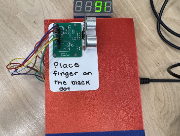
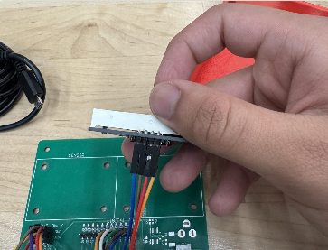

FEATURED PROJECTS
Projects
Compass Pro Bono — NLP Analytics Pipeline
Built an end-to-end NLP analytics pipeline to analyze open-ended survey responses from Compass Pro Bono clients and volunteers. The pipeline cleans raw text data, performs sentiment analysis, thematic clustering, correlation analysis, and transforms unstructured feedback into actionable business insights using Python, AWS Comprehend, AWS S3, and Power BI.

Power BI Dashboard
Interactive dashboard showing sentiment distribution, theme frequency, correlations, and survey insights generated from the NLP pipeline.
Smart Fingertip Screening Device
Designed and built an end-to-end embedded health screening device using a Raspberry Pi Pico and MicroPython. The system detects hand proximity using an ultrasonic sensor, reads fingertip temperature through a thermistor, displays results on a 4-digit LED display, and provides LED-based positioning feedback. MQTT communication enables live temperature transmission and remote monitoring through Python visualization tools.

Assembled Device
Final prototype with enclosure, LEDs, and integrated display.

Internal Layout
GPIO wiring, sensor integration, and internal hardware layout.
TECHNICAL SKILLS
Data Analytics, AI, and Systems Engineering
Used Python, SQL, and R across analytics and engineering projects for data cleaning, automation, statistical analysis, machine learning workflows, and visualization. Power BI was used to transform processed data into decision-support dashboards.
In the Compass Pro Bono NLP pipeline, I processed unstructured survey responses, built analytics workflows, and converted qualitative feedback into measurable insights.
The Fingertip Screening Device strengthened my embedded systems experience through hardware-software integration, sensor polling, ADC conversion, and model-based systems engineering workflows.
PROFILE
Background and Coursework
Systems Engineering student at George Mason University's Volgenau School of Engineering. My academic focus lies at the intersection of systems thinking, data analytics/engineering, embedded systems, and technical problem-solving. I apply these principles directly through hands-on engineering projects involving NLP pipelines, system modeling, and hardware-software integration.
Education
George Mason University
B.S. Systems Engineering
Student · Volgenau School of Engineering
Relevant Coursework
Systems Engineering Design, Model-Based Systems Engineering, Systems Architecture, Requirements Engineering, Data Engineering, Probability & Statistics, Operations Research, Programming for Engineers
Tools and Platforms
Python, SQL, R, MagicDraw, Innoslate, GitHub, VS Code, Raspberry Pi Pico, Thonny IDE, MQTT, Power BI